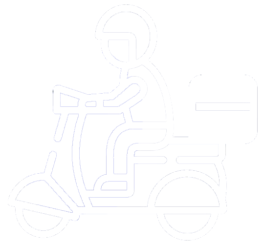

<nav class="navbar" style="background-color: #5A6FE9;">
    <a class="navbar-brand col-sm-3 col-md-2 mr-0" routerLink="/home">504 Delivery</a>
    <ul class="navbar-nav px-3">
      <li class="nav-item text-nowrap">
        <a class="nav-link" href="#" data-toggle="modal" data-target="#modal-usuarios">Cerrar Sesion</a>
      </li>
    </ul>
</nav>
